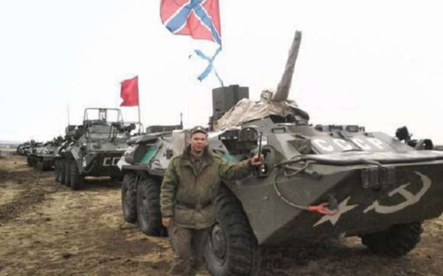

К вопросу о Советах в Новороссии
1.Считаем, что теорию мы знаем и речь пойдет о воплощении ее в жизнь. Выстроим логический ряд. Как известно, политика есть классовая борьба за взятие, удержание и реализацию государственной власти. Власть на Донбассе взяли, удержали теперь вопрос о реализации власти в ведение которой входят вопросы экономики и социальной политики. Кто взял власть на Донбассе? На этот вопрос история еще не дала ответа, но можем уверенно говорить, что значительная часть вооруженных людей — это трудящиеся массы: рабочий класс и мелкие предприниматели (которые в недалеком прошлом были рабочими и инженерами). Поэтому на Донбассе объективно сложились условия для установления народовластия, для воплощения в жизнь идей социализма и соответственно для создания советов как органов государственной власти. Основой этих условий является наличие вооруженных рабочих (или людей не потерявших связи с рабочими и трудящимися) и то, что рабочий класс Донбасса — это традиционно сильный отряд русского рабочего класса. Понятно, что в «мирное» время в условиях господства капитализма советы создать невозможно. Максимум что мы можем в «мирное» время это проводить собрания (совещания, съезды) с обсуждением вопросов об обучении рабочих (трудящихся) коллективным действиям. Некоторым товарищам могло показаться, что рабочие Донбасса (и в целом рабочие Украины) слабы по отношению к российским рабочим: к примеру они не бывали на заседаниях в Н. Новгороде. Однако последние события показали, что рабочий класс Донбасса это мощнейший революционный отряд русского рабочего класса, который в один момент показал пример действительно революционных действий в борьбе с самым реакционным отрядом мирового капитала — американо-украинским фашизмом. Да донбасские рабочие не участвовали в работе съездов в Нижнем Новгороде, не учились борьбе за повышение заработной платы или улучшению условий труда, но в решительный момент истории они смогли взять в руки оружие чтобы противостоять нацистам и «жидобандеровцам», а попутно и строить народное государство. Хотелось бы, чтобы вопросы экономики решались на уровне республик (Луганской, Донецкой) однако такого нет. Руководители республик не являются сознательными строителями социализма (хотя возможно, что являются стихийными социалистами). Однако сложилась база для воплощения идей социализма в Алчевске. Благодаря усилиям тов. М. в бригаде имеется немало социалистически мыслящих людей. Заместителями и.о. комбрига являются наши товарищи из красного отряда. Здесь сложились и субъективные условия для создания Советов. То есть созданы условия для привлечения к управлению городом и предприятиями города трудящихся масс организуемых в Советы. Советы могут быть созданы при прямом участии и взяты под охрану бойцами бригады. Собственно какова задача сил социализма? Привлечь к решению задач управления обществом как можно больше масс трудящихся. В отличие от сил капитализма которые всячески стремятся ограничить участие широких масс в управлении экономикой страны. Но массы должны быть организованы, чтобы их влияние было постоянным, а не разовым. Вот это и есть постоянно действующая цель всей работы коммунистов. Советы надо создавать как по территориям так и по предприятиям. Как практически это сделать? Организовать проведение собрания, провести его. Обязательно под защитой бойцов. Избрать постоянно действующий орган управления, ввести в его состав и представителей бригады. Противодействие будет серьезное: «мол у нас уже есть и профсоюзы и территориальные советы и местная власть нас устраивает и пр.». Стоит проводить собрания на предприятии и по территории в том числе принудительно. В наше время проблема заключается в том, что люди (работники) не имеют возможности проводить собрания, встречаться, коллективно обсуждать вопросы. Поэтому проведение собраний — это шаг навстречу привлечения широких масс к управлению городом и регионом. Вспомним историю. Большевики создавали комбеды по сути используя силу государственной власти. И мы можем также поступать: добровольно (желательно), но можно и принудительное объединение всех жителей и субъектов хозяйствования (не стоит бояться возможных обвинений в «недемократизме» — обвинять нас будут всегда). Здесь нам могут противостоять и власти республик. Как-бы продолжает действовать закон о военном положении (запрещающий собрания …). Хотя этот закон должен был подразумевать всеобщее обучение народа военному дела как первому шагу перед всеобщим уже вооружением народа (оружие не обязательно должно быть на руках, оно может быть в казармах, но закрепленное за определенными лицами (такое реализовано на Кубе). Вполне возможно что полноценные Советы нам создать не дадут, а вот лозунг о необходимости всеобщего обучения населения военному делу (на случай необходимости защиты республик от нацизма) — использовать необходимо. Всеобщее обучение населения работе с оружием, умение стрелять и тому подобное — это бригада делать может.
В том числе. Литература. Ленин «Грозящая катастрофа и как с ней бороться».
Немного размышлений. Среди нас есть товарищи (хотя вероятно, что их кол-во за прошедший год стало меньше) которые считают, что советы и победа над капитализмом может прийти только из России, и даже сообщают город откуда это произойдет: Ленинград, Москвы или в крайнем случае Нижний Новгород так как именно здесь проживает самый революционный и сознательный класс, а на Донбассе рабочий класс «отсталый», ведь он борется всего лишь против фашизма. Эти товарищи заблуждаются. Они находятся в своих фантазиях, что только в их городе будет происходить революция. Ведь это так удобно: никуда ехать не надо, да и лишений меньше — днем занимаешься «революцией», а вечером домой отдыхать.
2.Что мешает делу создания советов. Существует следующий взгляд у граждан России искренне желающих участвовать в событиях на Донбассе. Мол это «дружественный» нам народ и нас надо ему помочь в борьбе за свободу. Это неверно. Русские живущие на Донбассе — это не «дружественный народ», это часть народа России, это наш народ такой же как к примеру в Белгороде, Курске, Ростове. И русские из России едут защищать не просто русских из бывшей Украины, а едут защищать себя, то есть защищать Россию, защищать свои города от агрессии западного капитала. Особенность такой защиты России заключается лишь в том, что она происходит на территории Донбасса. Аналогия — начало Великой Отечественной войны когда на территории Украины уже полыхала война, враг захватывал наши города, а остальная глубинная Россия еще «раскачивалась». Донбасс (и весь Юго-Восток Украины) — это как авангард в войне. Авангард состоит из самых смелых и решительных борцов, который первый встречает врага и несет самые большие потери. Такой взгляд жителей России на жителей Донбасса как на «уже не своих, живущих за границей» воспитывался все годы после разрушения Советского Союза и достиг определенных целей. Русские Юго-Востока в городах которых русская весна не достигла результата (Харьков, Одесса …) ждали помощи от русских из России. Помощь оказали Стрелков, Моторолла (был замечен в Харькове) … однако коммунистов не было. Если говорить о причинах неудач в этих городах, то народ был не организован, о партиях которые могли бы взять на себя эти функции: одна предала (Партия Регионов), вторая КПУ (частью предала, а частью осталась в стороне), остальные разрозненные комотряды оказались малочисленны и не на высоте. Взгляд на русских с Украины «как не на своих» надо менять. Донбассовцы — это наши люди (пишу от имени граждан России), они даже более наши так как стоят на передовом крае борьбы с мировым капиталом. Поэтому надо ехать на Донбасс не «помогать» создавать Советы — надо ехать на Донбасс создавать Советы, так же как ехали бы мы на «свой» Урал или в Сибирь. Есть особенности у жителей Донбасса? Есть. И они заключаются не столько в том, что они вместо «что» говорят «шо», произносят букву «Г» по другому и не «окают». И даже не в том, что умеют «говорить на украинской мове». Отличие в том, что они все 23 года после разрушения СССР подвергались кроме более сильного экономического гнета (зарплаты на Украине были всегда ниже чем в России и промышленных предприятий было разрушено больше чем в России) еще и национальному гнету (насильственное внедрение украинского языка, ликвидация русских школ, значительно более сильная пропаганда русофобии: здесь и пропаганда якобы «голодомора украинцев устроенного русскими» и героизация бандеровских нацистов и пр.). Этот гнет воспитал в большинстве жителей Донбасса (тех на которых данная пропаганда не действует) серьезных и решительных борцов. Также русские с Украины умеют быстро (в разговоре) отличить своего от чужого. Отличить либерала-западника, пробандеровца, русофоба (все «в одном флаконе») от своего — пророссийского (а часто просоветского) человека. В этом случае русские из России, которых часто назначают на высокие военные должности на Донбассе, в том числе и на контрразведывательные должности ведут себя как «слоны в посудной лавке» не умея отличить своего от чужого. Хотя этой «премудрости» выявить русофоба-западника научиться нетрудно. Вот собственно и все из «местных особенностей» для русских из России приезжающих на Донбасс. Установить связи с местными коммунистами и с местным населением нужно, но считать, что главная надежда только на местных коммунистов не стоит. Местных коммунистов кроме Бебешко («Комиссара») мало (почти нет, первый секретарь горкома (женщина) полностью поддерживает местную власть — то есть «вписалась» в структуры старой госвласти и нам не помощник), другие к идее Советов относятся также как все (то есть никак). Поэтому красному отряду (Аркадьичу, Доброму и другим) предстоит проявить большую активность в деле работы с массами. Проводить общие собрания, собирать активы … Донбасс для нас — это место нашей учебы работы с массами. Ведь политика начинается там где речь идет о миллионах. Работать с небольшим количеством людей (лекции, семинары, собрания …) мы умеем. Теорию мы знаем. А практики революционных действий у нас нет. Сейчас появилась возможность применять знания на практике. Такой факт. Не было ни одного вооруженного отряда на Донбассе где бы командиром был коммунист. А ведь таких отрядов было создано около ста. Комотряд — не исключение — он был принят в состав уже созданной ранее бригады. Видимо знание диалектического материализма, диалектики Гегеля недостаточно для победы. Готовимся ли мы к революции, каково будет наше место в ней. Практика показала, что «советы» боевые командиры слушать не всегда хотят, надо самим быть во главе созданных нами отрядов (как Ворошилов, Фрунзе, Орджоникидзе … ). А послушают ли нас Аркадьич, Добрый? Возможно ли в Н. Новгороде поставить вопрос о приезде рабочих лидеров на Донбасс для установления прямого контакта между предприятиями? Будут ли полезны результаты учебы на съездах в Н. Новгороде при реальном создании Советов на Донбассе? Может такое быть, что рабочие Донбасса проявив смелость и решительность и одним махом перейдя от «экономической» борьбы к революционной могут превратиться из учеников в учителей. Ведь диалектику они учили не по Гегелю. Но … — у них в действиях сплошная эмпирика и отсутствие научной теории сказывается на практике. Похоже, что командиры не знают что делать дальше: военная составляющая затягивается, экономикой они заниматься не хотят (хотя вся жизнь требует именно этого). Время нашей активной работы в данном регионе (а это уже давно регион Российской Федерации) пришло! Кто кроме нас будет обеспечивать ополчение революционной и патриотической литературой, иметь политработников, обучать теории построения социализма и главное — строить социализм вместе с ними. Воюющие за Россию имеют разные взгляды и вероисповедане. По взглядам здесь и монархисты-белогвардейцы, и казаки со своей казачьей республикой и сторонники «русского мира» и «советские люди», по религии: православные, мусульмане, язычники-родноверы. Но когда речь заходит об экономике, о вопросе кто будет распоряжаться созданными материальными ценностями — узкая группа капиталистов-олигархов или широкие массы трудящихся — то все становятся сначала антикапиталистами, а потом социалистами-коммунистами. И данный вопрос с научной точки зрения освещать кроме нас — революционных марксистов-ленинцев некому. А. |